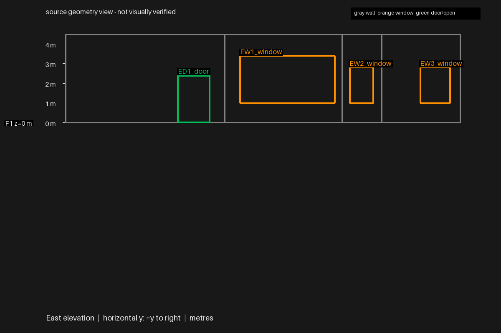
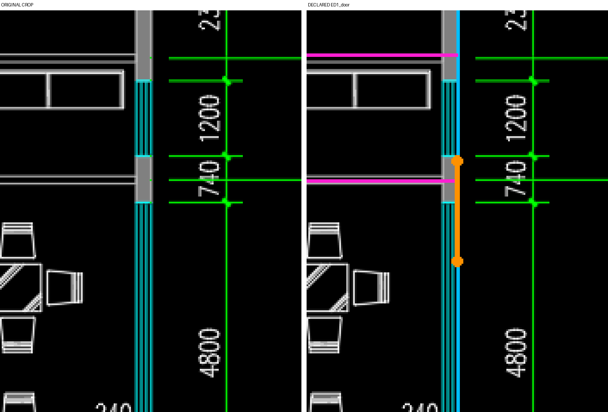

从原失败墙网续修，Sonnet 576.51秒完成。开发侧限定东立面范围，模型重看原图、量测并修订；生成时无GT、正确坐标或评测结论。
门窗水平端点误差均小于2厘米，三窗高度正确；东门底/顶仍低约20厘米。东南房间错并、西侧四短窗高度错误保留。最终7空间/11窗/9门，不替代整楼工作基点。
旋转查看实际模型 · 范围与验证 · 独立评价 · 恢复输入/改动核验
单位：毫米。按原图20000mm总长显式平移[0,20,0]，未拟合GT；原坐标评价同时保留。负宽差表示较窄。
| 开口 | 中心位置误差 | 宽度差 | 底 / 顶差 |
|---|---|---|---|
| ED1_door | 7.565 | -4.401 | -200.0 / -200.0 |
| EW1_window | 2.035 | 14.305 | 0.0 / 0.0 |
| EW2_window | 13.122 | 10.454 | 0.0 / 0.0 |
| EW3_window | 10.771 | 13.067 | 0.0 / 0.0 |



源/显示精确重放、离线旋转查看通过；这些只证明模型自洽可看，不替代图纸保真。